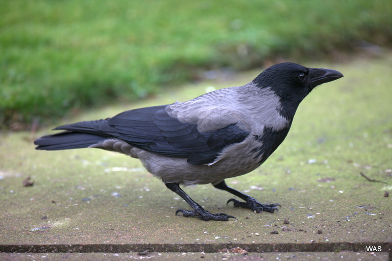
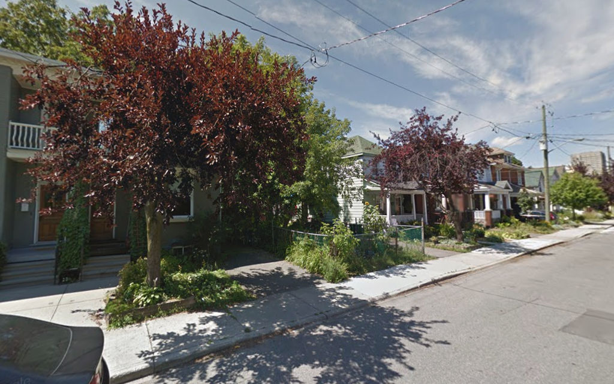
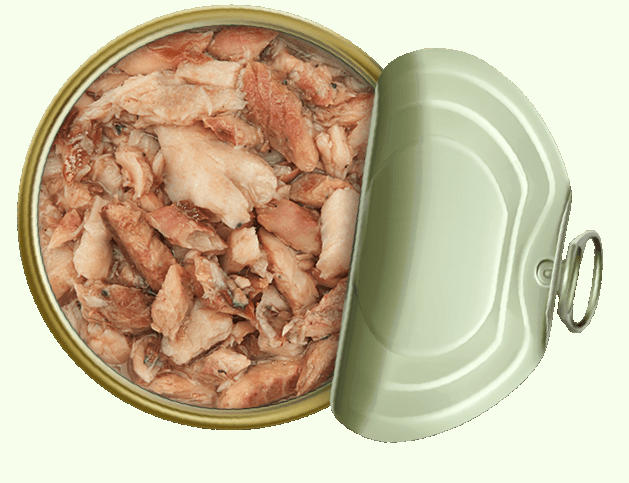

Crow
In Russia, crows are grey birds with a black head and black wings. Crows live in towns and in the countryside. They like to eat food that people don't want to eat. Crows often come close to people. They are not afraid.
In Canada, crows are completely black.

In May 2014, I was living in Canada. I lived in a house on a quiet street, with many trees. One day, I saw two crows together on the ground. One crow was very big. It was making a loud noise. The other crow was small. It was trying to fly away. I thought that the big crow wanted to hurt the small crow. I thought, "I will be a hero! I will protect this small bird."

I opened the door of my house and I went outside. The small crow was in the doorway of the house opposite. It was gripping the door with its claws and flapping its wings. The big crow was flying right behind it, but it flew away when I came close.
The small bird was very young. It did not know how to fly. I pushed my index finger against its legs, and it gripped my finger with its claws.

I thought, "Crows are clever birds. They learn fast. It would be good to have a crow as a pet. This crow can live in my house." I carried the bird on my finger into my house. In my house there is a balcony. I put the crow on the ground on the balcony, and went to my computer. I wanted to learn how to feed a baby crow.

My daughter has a cat. Cat food from a tin is good for baby crows. I opened a tin of cat food and went to feed the crow. It was not outside on the balcony. It was inside, in my bedroom. It was on the bed, on the highest part of the bed. It stood on one pillow, flapping its wings, then jumped onto the other pillow. Then it turned round, flapped its wings and jumped back to the first pillow.
The young crow did not want to be on the ground. It wanted to be high up. I sat down on a chair with my notebook computer. The highest place in the room was the top of my head. It stood on my head and I read about how to look after it.
I quickly understood that it is not good to keep a crow as a pet. Crows live in big families. They need to be with other crows. They talk to each other. They learn together. A crow that lives with people does not have such a rich life.
I understood that the big crow did not want to hurt the baby. It was its mother or its father. It was helping its baby learn to fly.
I took the baby crow outside and put it in a tree. It stood on one branch of the tree and flapped its wings and jumped to the next branch. In another tree, three big crows were watching it. Each time the young crow jumped, the three big crows made a big noise: "Caw! Caw! Caw!" They were saying, "Yes! Yes! You can fly!" Three big crows: mother, father and big sister who was born the year before.
When the young crow got to the top of the tree, its mother flew to the bottom of the tree and waited. After a long time, the young crow jumped and flew (or fell) down to be with its mother. Its mother gave it some food.